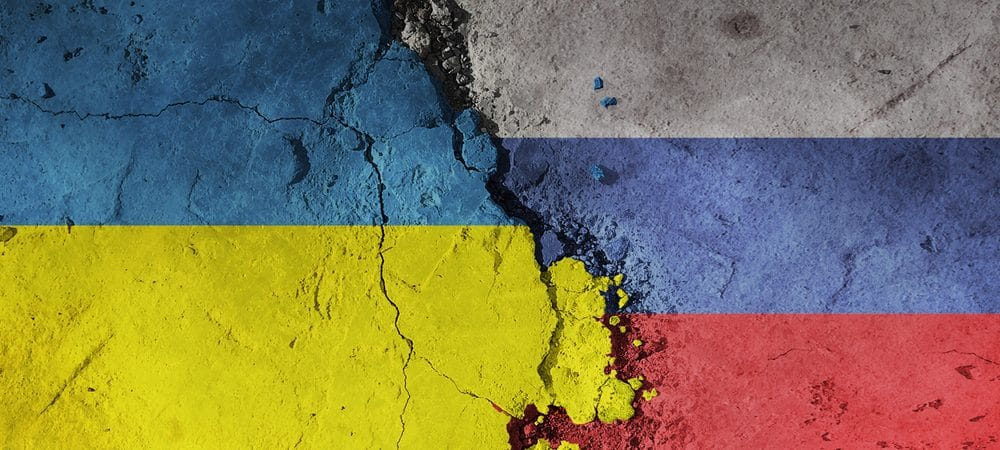

Internet
Minha análise da Internet tem a ver com sua função em países que estão em guerra. Sabe-se que a Ucrânia e a Rússia estão em um conflito territorial, que teve um impacto notável em diferentes áreas, como alimentos, combustíveis, valor da moeda e psicológicos no que poderia ser um combate iminente fora dessas duas fronteiras.
Mas vamos falar de um componente diferente nessa discórdia, o uso da internet, devido ao crescente destaque e avanços na rede, também estamos diante de uma guerra cibernética, que pode alterar um direito global de conexão ao que pode ser utilizado em benefício de interesses individuais, um exemplo disso são os sites censurados ou atacados por sua posição política, entre eles o canal de notícias RT e a agência Sputnik, pelo Meta, a empresa responsável pelo Facebook. Em Resposta, o regulador das comunicações russas bloqueou a rede social Meta e decidiu bloquear permanente e imediatamente o Facebook e o Instagram. O mesmo aconteceu com outras redes sociais, como YouTube e Google.
Neste caso, quem realmente é o dono da tecnologia que proporcionou as maiores mudanças na comunicação da humanidade? Oficialmente, ninguém. Mas, na prática, quem está certo? As conexões devem ser limitadas a um único tipo de identidade e opinião. Ou deveria ser fornecido por uma infinidade de critérios, e diante desse dilema a pergunta correta seria, a internet deveria ter limites como fronteiras, onde cada país deve ter suas próprias restrições na rede e, portanto, sua própria autonomia ao usar o interligação de bandas, tendo em conta que em 2019, Moscovo tentou ligar ao RuNet, uma espécie de Internet interna (intranet) que pode ser ativada em caso de ameaças externas e bloqueios, ou por outro lado durante a guerra Elon Musk, forneceu cobertura de internet via satélite Starlink para continuar dando conexão à Ucrânia.
Embora a Internet não tenha um dom específico, ela é monitorada e mantida pela Internet Society, uma organização sem fins lucrativos que supervisiona a formação de políticas e protocolos que definem como usamos e interagimos com a Internet, localizado em Los Angeles, Califórnia, Estados Unidos.
A invasão da Rússia na Ucrânia está levando a uma guerra que vai além do campo de batalha, os países também travam uma disputa pela internet, por meio das redes sociais.
Novas formas de comunicação, possibilidade de explorar novas oportunidades, inclusão social, descentralização da informação, cultura e educação, Internet ampla ou o que queremos e desejamos: se queremos aprender, ela nos ajuda a aprender além da sala de aula, a qualquer momento, em qualquer lugar e de várias maneiras. Estamos em busca de entretenimento, a Internet oferece formas de expandir ou acessar informações sobre o filme que queremos, nos atrai vídeos curiosos, filmes. Mas existe essa liberdade ou é limitada ou nos coloca em perigo ou segurança diante do alcance que ela proporciona.
Grupo

Daniela Fuenmayor

Gabriel Gustavo Grams Holz

Gustavo Melchior

João Geovani de Camargo

Jorge Hugo Almeida

Pablo Haleson